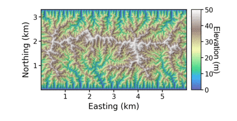
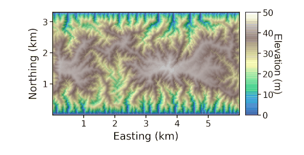

1. A parsimonious integrated landscape evolution model
Welcome to the documentation of MuddPILE, a simple landscape evolution model. The model is named MuddPILE because mud pile. Get it? But although Simon Mudd started the code it has a number of authors: Simon Mudd, James Jenkinson, Fiona Clubb and Declan Valters have all made contributions.
The code is meant to be simple and fast. It simulates fluvial incision using the stream power law, and hillslope processes are simulated with either linear or nonlinear sediment flux laws. Both of these erosion modules use implicit schemes, and the model uses sparse matrix solvers for maximum computational efficiency.
1.1. What is MuddPILE?
MuddPILE is a very simple landscape evolution model that has fluvial erosion modelled with the stream power law (E = K Am Sn) and hillslope evolution modelled with a nonlinear sediment flux law, e.g., Roering et al., 1999, JGR. It also contains an even more basic hillslope component that simply forces all
These are the things MuddPILE does:
-
Solves basic stream power and hillslope diffusion in transient cases.
-
Allows the user to input spatially varying uplift and litholoigic information.
-
Includes some tools for setting up uplift and lithology fields
-
It also includes a number of steady state solvers, that allow us to "snap" the landscape to a steady state solution quickly, even over spatially varying uplift and lithology.
-
We have also included routines for ingesting three-dimensional lithologic data
MuddPILE uses the FASTSCAPE algorithm to compute fluvial erosion, and Simon cooked up a relatively fast implicit method to solve the hillslope equations since they are nasty and nonlinear. You can force the model with spatially heterogeneous uplift and erodibility. It runs fairly quickly. So if your goal is just to generate some fairly simple landscapes with some fairly simple rules fairly quickly this is the model for you.
1.2. Your features are incomplete, why can’t MuddPILE do [thing]?
MuddPILE was not designed as a general, flexible landscape evolution model. Many of those already exist. You can, for instance, try landlab, CHILD, €ros, pybadlands, or CAESAR. MuddPILE was developed to run on our servers to meet the modelling needs of specific scientific papers. If you know c++ you can go into the LSDRasterModel object and make general models, but I’m afraid at the moment if you just want to run some simple models, the model driver (MuddPILEdriver) isn’t particularly flexible. The main purpose for publishing this code is to make our simulations transparent and reproducible so that any simulation results reported in our papers can be easily recreated by other workers.
2. Installing MuddPILE
We distribute MuddPILE as both c++ source code and as a program that you can run in one of our docker containers. The latter approach is easier to get started as long as you have docker on your computer.
If you don’t have Docker, then you will need to compile from source code.
2.1. Use docker (Option 1)
-
First, you need to install docker
-
Once you have docker installed, you can use our container:
$ docker run -it -v C:\LSDTopoTools:/LSDTopoTools lsdtopotools/lsdtt_alpine_dockerNote that prior to the colon in this statement
C:\LSDTopoTools:/LSDTopoToolsyou will need to put the path you an LSDTopoTools directory that you have made on your computer. This command:-it -v C:\LSDTopoTools:/LSDTopoToolstells the docker container to link directories on your computer to an/LSDTopoToolsdirectory within the container. -
Our alpine container actually has the MuddPILE program
MuddPILEDriver.outalready installed. So all you need to do is get some data, a driver file (see examples below) and start simulating landscapes.
2.2. Compile from source code (Option 2; only use if you don’t have Docker)
| This method is not so easy if you don’t know your way around a linux system. We suggest you use the docker instructions above instead. |
-
First things first: you need to set up a Linux-like environment on your computer.
-
If you have Linux, great! You just can jump right in!
-
If you have MacOS, great! MacOS is built on top of Linux!
-
If you have Windows, not as great! But Microsoft realized that lots of developers use Linux but wanted them to keep buying their operating system, so they have created something called the Windows Linux Subsystem. To get that started, follow Microsoft’s instructions.
-
-
Okay, from now on I am assuming you are in a Linux-like environment. If you have never done this before, you might look at our instructions about Linux in this documentation.
-
You will need a few tools first, so in you Linux system grab
gitand a few other things:$ apt-get update $ apt-get install -y git tzdata build-essential cmake libfftw3-dev -
Okay, that will take a little while, but after that, I suggest making a directory to hold LSDTopoTools somewhere, and then going into that directory. You will then need to grab the source code from the internet using
git:$ git clone https://github.com/LSDtopotools/MuddPILE.git -
Before you compile the code, you need to decompress the boost and mtl4 libraries. We have packaged these up for you so our MuddPILE distribution is self-contained. To unzip, go into the
boost_mtl_minimaldirectory and unzip usingtar:$ cd MuddPILE/boost_mtl_minimal $ tar -xvzf boost_mtl_minimal.tar.gzUnzipping this might take a while. Actually it takes quite a while. Note if you don’t want
tarto print all the information about the files being zipped usetar -xzf(thevflag is forverbose). -
Now, go into the /
src/driver_functions/directory and make the program:$ cd ../src/driver_functions $ make -f MuddPILEdriver.make -
The result will be a program called
MuddPILEdriver.out: this is the model! You can now run landscape evolution runs. Check back here for documentation on actually running the model (we hope to have documentation ready by end September 2017). -
You want this program to be in your path. You can do that with
$ export PATH=$PATH:/path/to/MuddPILE/binYou need to update
/path/to/MuddPILEwith your own path on your own computer.
2.3. Visualisation
The output of MuddPILE is primarily raster files, in ENVI bil format (NOT ESRI BIL), which can be read by GIS software such as QGIS.
We have also developed a number of python tools for plotting LSDTopoTools and MuddPILE output. These are located in the repository LSDMappingTools. If you just want to run the model and look at the results, use QGIS or similar. You should really only use LSDMappingTools if you are using LSDTopoTools regularly. Click on the LSDTopoTools visualisation links for instructions.
3. Some example runs
In this section we will post a few example landscapes, along with how to get them running in MuddPILE.
3.1. Basic syntax of a MuddPILEdriver call
You should by now have MuddPILEdriver installed on your computer. If not, read this section: Installing MuddPILE.
-
We will assume that you are working on our Alpine docker container (see installation instructions).
-
In any call to MuddPILEdriver, you should have one terminal window open in the directory with the program, and one in the directory with the data. If you are using vagrant, you should use either
vagrant ssh(in MacOS or Linux) or putty.exe to create two terminal windows. -
The examples are in the MuddPILE repository. The easiest way to get them is to run:
# git clone https://github.com/LSDtopotools/MuddPILE.git -
Then navigate into the examples directory
# cd MuddPILE/examples
3.2. First example: a simple fluvial landscape.
In this example we will make a very simple landscape using steady forcing and constant uplift.
Go into the directory called basic_fluvial_landscape
We call the program with:
$ ./MuddPILEdriver.out basic_fluvial.paramThis will produce a number of rasters.
-
The raster with
9999in the filename is the initial raster after running the diamond square algorithm. the parabola, and roughening the surface. -
The raster with
9998is the raster after running some initial fluvial incision. -
All other filenames are time slices that show the evolution of the landscape under steady forcing.
You can look at these rasters using your favourite GIS (e.g., QGIS), or you can look at them using our python tools.
3.2.1. Python visualisation of the simple fluvial landscape
-
Use conda to install the correct python enviroment: setting up python
-
Clone the LSDMappingTools repository.
-
Go to this repository in a cmd.exe (Windows) or terminal (Linux,MacOS) in your HOST operating system.
-
Run the script
Create_hillshade_series_in_directory.pyfrom the repository. YOU WILL NEED TO ADJUST THE DIRECTORY NAME TO SUIT YOUR DIRECTORY STRUCTURE AND OPERATING SYSTEM:> python Create_hillshade_series_in_directory.py -dir C:\VagrantBoxes\LSDTopoTools\Git_projects\MuddPILE\examples\basic_fluvial_landscape\ -fname basic_fluvial -zmax 50The
-dirflag points to the data directory. The-fnameflag points to the prefix of the rasters (before the numbers). The-zmaxflag tells the plotting routine what the maximum elevation it is to plot in the colourbar. -
This will create a timeseries of
.pngfiles. They look like this when stitched together. Note that the initial surface is a random fractal that has random noise superimposed so your landscape will look a bit different (but should have the same statistical properties):Figure 1. Simple fluvial landscape
3.3. Second example: a landscape with both fluvial and hillslope processes.
This example is similar to the previous example but in this case we turn hillslope processes on. You should see that the hillslopes begin to diffuse resulting in a lower drainage density. Go into the example directory basic_hillslope_and_fluvial
| Hillslope diffusion is much more complicated to solve and results in a far slower model run. |
-
We call the program with
$ ./MuddPILEdriver.out basic_hillslope_and_fluvial.param -
As with the last run, this will produce a number of rasters.
-
The raster with
9999in the filename is the initial raster after running the diamond square algorithm. the parabola, and roughening the surface. -
The raster with
9998is the raster after running some initial fluvial incision. -
All other filenames are time slices that show the evolution of the landscape under steady forcing.
-
-
For python visualisation (see previous example), run the script
Create_hillshade_series_in_directory.pyfrom the repository. YOU WILL NEED TO ADJUST THE DIRECTORY NAME TO SUIT YOUR DIRECTORY STRUCTURE AND OPERATING SYSTEM:> python Create_hillshade_series_in_directory.py -dir C:\VagrantBoxes\LSDTopoTools\Git_projects\MuddPILE\examples\basic_hillslope_and_fluvial\ -fname basic_hillslope_and_fluvial -zmax 50Figure 2. Simple hillslope and fluvial landscape
3.4. Third example: random uplift.
In this example we simulate a fluvial-only landscape that is subject to random uplift rates. Go into the example directory random_uplift
$ ./MuddPILEdriver.out random_uplift.paramBecause this has no hillslope diffusion, the model should run quite quickly. Again, you will get a number of DEM outputs. To visualise, use:
> python Create_hillshade_series_in_directory.py -dir C:\VagrantBoxes\LSDTopoTools\Git_projects\MuddPILE\examples\random_uplift\ -fname random_uplift -zmax 80Note that if you wanted to get a full record of all the uplift rates you would need to reduce the print_interval and use the csv info file to plot the uplift through time.
3.5. Fourth example: spatially varying erodibility.
Again we use a fluvial-only landscape. This time we switch on spatially varying K.
Go into the example directory spatially_varying_K.
We call the program with.
$ ./MuddPILEdriver.out /LSDTopoTools/Git_projects/MuddPILE/examples/spatially_varying_K spatial_K.paramTo visualise, use:
> python Create_hillshade_series_in_directory.py -dir C:\VagrantBoxes\LSDTopoTools\Git_projects\MuddPILE\examples\spatially_varying_K\ -fname spatial_K -zmax 40If you want to see the actual distribution of the K parameter, look in the raster with Kraster
3.6. Next steps
Now that you have seen a few examples, you can go into the parameter file options and start playing around with different parameters. The next two chapters explain all the options available using the MuddPILEdriver.
4. Steady state tools
MuddPILE includes a number of tools for taking a drainage network afrom existing topograhy and instantly madifying the elevations to obey a steady state (where uplift equals erosion) solution of the stream power law.
4.1. Basic snapping
A basic snapping call contains a few basic elements in the driver file
-
read_initial_raster: true -
carve_before_fill: true -
snap_to_steady: true
So a basic driver file might look like:
# These are parameters for the file i/o
read fname: test_data
write fname: test_data
read_initial_raster: true
carve_before_fill: true
snap_to_steady: true
# The data that you want printed to file
write_hillshade: trueThis will use default values for parameters in the stream power law. You can change defaults with:
# These are parameters for the file i/o
read fname: test_data
write fname: test_data
read_initial_raster: true
carve_before_fill: true
snap_to_steady: true
m: 0.5
n: 1
snapped_to_steady_relief: 400
snapped_to_steady_uplift: 0.0001
# The data that you want printed to file
write_hillshade: trueIn this version of the model the K parameter will adjust so the landscape has the relief assigned by the parameter snapped_to_steady_relief.
We can also have an additional step of snapping hillslopes above a critical drainage area to a constant slope:
# These are parameters for the file i/o
read fname: test_data
write fname: test_data
read_initial_raster: true
carve_before_fill: true
snap_to_steady: true
m: 0.5
n: 1
snapped_to_steady_relief: 400
snapped_to_steady_uplift: 0.0001
snap_to_critical_slopes: true
rudimentary_critical_slope: 0.4
threshold_contributing_pixels: 200
# The data that you want printed to file
write_hillshade: true4.2. Adding lithology
If we want to add lithology (or, alternativly, spatially varying erodibility), we use some different parameterrs in the driver file:
# These are parameters for the file i/o
read fname: test_data
write fname: test_data
read_initial_raster: true
carve_before_fill: true
snap_to_steady_variable_variable_K_variable_U: true
variable_U_name: U_raster_prefix
variable_K_name: K_raster_prefix
# The data that you want printed to file
write_hillshade: trueThe U_raster_prefix is the prefix of a raster (in ENVI bil format) without the extension. This needs to be the same size as the elevation raster.
In some cases, the snapped topography has large ridges between basins, so we use iterative snapping to migrate the divides.
# These are parameters for the file i/o
read fname: test_data
write fname: test_data
read_initial_raster: true
carve_before_fill: true
snap_to_steady_variable_variable_K_variable_U: true
variable_U_name: U_raster_prefix
variable_K_name: K_raster_prefix
cycle_fluvial_snapping: true
print_snapped_to_steady_frame: true
snapping_cycles: 30
snap_print_rate: 10
# The data that you want printed to file
write_hillshade: trueThe snapping_cycles indicates how many times you want to iterate on the fluvial network. The snapping_print_rate indicates how frequently you want the snapped model to print to a raster.
Like in the basic raster snapping, you can add a snap_to_critical_slopes paramater.
4.3. Three dimensional lithology
If you want to use a full three dimensional lithologic dataset, we have a final option snap_to_steady_variable_variable_K_variable_U_use_LithoCube
# These are parameters for the file i/o
read fname: Switz_IsolateFixedChannel
write fname: Switz_LithoSnap_750BL_SMM
# General DEM stuff (and the fixed channel)
channel heads fname: NULL
read_initial_raster: true
carve_before_fill: true
fixed_channel_csv_name: single_channel_nodes_dropped_750m.csv
# Forcings
rudimentary_steady_forcing_uplift: 0.0001
# Lithocube parameters
load_lithology: true
only_test_lithology: false
vo_filename: vo_100m_20191031_UTM.vo
vo_asc_filename: vo_100m_20191031vo_export4_20191031
print_K_raster: true
print_lithocode_raster: true
print_Sc_raster: true
# Critical slope parameters
cycle_fluvial_snapping: true
print_snapped_to_steady_frame: true
snapping_cycles: 500
snap_print_rate: 50
snap_to_steady_critical_slopes_use_LithoCube: true
threshold_contributing_pixels: 200
elevation_change: -750The lithocube parameters relate to data generated by GOCAD. You can see options to print the K and critical slope data produced by these.
5. MuddPILE details
MuddPILE, while not as flexible as, say, Landlab, has some options. There are also a few different file output options. We list all the options in this chapter. Note that these are quite messy at the moment, since this is a beta version that has simply been used to run simulations for a forthcoming publication.
5.1. The parameter file
The parameter file has keywords followed by a value. Like this:
---
a_boolean_key: true
a_string_key: super
an_integer_key: 42
a_float_key: 3.1415
----We list all the possible keys below. All keys have a default value so if you forget to add a key MuddPILE will still run using default values. We have adopted the convention of giving these parameter files the extension .driver.
The parameter file has a specific format, but the filename can be anything you want. We tend to use the extensions .param and .driver for these files, but you could use the extension .MyDogSpot if that tickled your fancy.
|
The parameter file has keywords followed by the : character. After that there is a space and the value. *There must be a : followed by a space or the key will not be read!`
5.2. Parameter file options
Below are options for the parameter files.
5.2.1. Basic file input and output
| Keyword | Input type | Description |
|---|---|---|
write path |
string |
The path to which data is written. The code will NOT create a path: you need to make the write path before you start running the program. |
read path |
string |
The path from which data is read. |
write fname |
string |
The prefix of rasters to be written without extension.
For example if this is |
read fname |
string |
The filename of the raster to be read without extension. For example if the raster is |
5.3. Important default settings that you cannot change
Our boundary conditions are theoretically flexible if you dig into the c++ code but in the MuddPILEdriver you can only have fixed elevation North and South boundaries and a periodic E-W boundary. A periodic boundary is one where the boundary wraps to the opposite side (i.e., in our models the computer thinks the East side of the domain is right next to the West side).
If you don’t read a raster, the model prints rasters in MuddPILE Atlantis, a mythical kingdom that is located in the Pacific Ocean. Basically we set the UTM zone to 1 and have the corner at 0 easting and 0 northing, i.e. on the equator.
5.3.1. Parameters for initiating the model domain
| Keyword | Input type | Default value | Description |
|---|---|---|---|
NRows |
int |
0 |
Number of rows in the model. |
NCols |
int |
0 |
Number of columns in the model. |
DataResolution |
float |
0 |
The size of the pixels in the model. |
minimum_elevation |
float |
0 |
If you have the |
| Keyword | Input type | Default value | Description |
|---|---|---|---|
read_initial_raster |
bool |
false |
If true, reads an initial raster from file. The initial raster’s directory and filename are determined by |
minimum_elevation |
float |
0 |
If you have the |
maximum_elevation |
float |
30000 |
If you have the |
remove_seas |
bool |
false |
If true, this changes extreme value in the elevation to NoData. This is quite useful when getting data from the internet because often the No Data values don’t register. |
min_slope_for_fill |
float |
0.001 |
The minimum slope between pixels for use in the fill function. |
print_raster_without_seas |
bool |
false |
If true, this overwrites the original raster with the new NoData values. |
5.3.2. Parameters for flux laws, and uplift, and timestepping
| Keyword | Input type | Default value | Description |
|---|---|---|---|
m |
float |
0.5 |
The area exponent in the stream power law. |
n |
float |
1 |
The slope exponent in the stream power law. If n does not equal 1, the numerics of the model are much more complicated (n = 1 can be solved by direct solution of the equations governing fluvial incision whereas other values require Nweton-Raphson iteration to a solution). If you use n for a value other than one we suggest using the adaptive timestepping routines. |
A_0 |
float |
1 |
A reference drainage area for chi calculations. |
background_K |
float |
0.0005 |
The background K parameter. |
D |
float |
0.002 |
The hillslope sediment transport coefficient (m2 / yr) |
S_c |
float |
1.0 |
The critical slope in the hillslope flux law. Dimensionless. |
write_hillshade |
bool |
false |
If true, prints a hillshade raster alongside an elevation raster. |
uplift_mode |
bool |
0 |
This is a switch that allows users to choose different modes of uplift. 0 denotes block uplift. |
dt |
float |
250 |
The timestep. Note that if you use hillslope diffusion this should be much lower. The model does not calculate any stability criterion. If you use n not equal to one we suggest using adaptive timestepping (see options below). |
5.3.3. Parameters for controlling simple model output
| Keyword | Input type | Default value | Description |
|---|---|---|---|
print_interval |
int |
10 |
For most types of runs, the model will print rasters every |
write_hillshade |
bool |
false |
If true, prints a hillshade raster alongside an elevation raster. |
5.3.4. Parameters for creating an initial surface
We have a number of routines to modify the initial surface. They are applied in order and superimposed on each other. Diamond square surfaces are first, then parabolic surfaces, then roughening, then surface diffusion.
| Keyword | Input type | Default value | Description |
|---|---|---|---|
use_diamond_square_initial |
bool |
true |
If true, uses the diamond square algorithm to create a fractal-like surface that is used as the starting condition. This is useful if you want to get complex, branching channel networks. |
diamond_square_relief |
float |
16 |
The total relief, in metres, of the surface generated by the diamond square algorithm. |
diamond_square_feature_order |
int |
8 |
This sets the size of the largest repeating features in the diamond square surface. It goes as the power of two, so if the feature order is 4, then the largest repeating feature will be 16 pixels wide. |
taper_edges |
bool |
true |
If true, this takes the original diamond square surface and tapers the edges to zero elevation using a linear scaling. |
taper_rows |
int |
10 |
The number of rows to taper along the edge of the DEM. Only has an effect if |
| Keyword | Input type | Default value | Description |
|---|---|---|---|
superimpose_parabola |
bool |
true |
If true, a parabola in the N-S direction is imposed, with a peak in the middle of the DEM. The higher the relief of this parabola compared to the relief of the diamond square surface, the more linear your initial basins will be. |
parabola_relief |
float |
6 |
Relief of the superimposed parabolic surface in metres. |
| Keyword | Input type | Default value | Description |
|---|---|---|---|
roughen_surface |
bool |
true |
If true, roughen the surface with random noise. |
fill_then_roughen_surface |
bool |
true |
If true, roughen the surface with random noise after filling. In many cases the diamond square algorithm leads to basins in the middle of the initial DEM, which are then filled. The surface roughening ensures that subsequent channels in these basins are not all straight. |
roughness_relief |
float |
0.26 |
The amplitude of the roughness elements in metres. These are randomly selected from a uniform distribution and added to the elevation raster at each pixel. |
diffuse_initial_surface |
bool |
false |
If true, run a simple diffusion algorithm to smooth out any sharp discontinuities. This is useful if you have a high relief initial surface and use nonlinear hillslope diffusion immediately. It "diffuses" by simply taking a weighted mean of the pixel in question (0.5 weighting) and the 4 nearest neighbors (0.5/4 weighting). |
diffuse_steps |
int |
5 |
Numer of diffusion steps. Higher numbers mean a smoother landscape. |
| Keyword | Input type | Default value | Description |
|---|---|---|---|
print_initial_surface |
bool |
true |
If true, prints the initial surface. The initial raster is given an integer key of |
5.3.5. Parameters for spinning up the surface
The initial surface has no incision or fluvial network. You need to spin up the model. If you ran to steady state just by setting an initial surface and running at the desired uplift rates it would take a rather long time for the model to reach steady state. So we have designed a number of ways to speed up this process. There are many flags for controlling different kinds of spinup routines, but after much experimentation we have inserted a switch called diamond_square_spinup that sets all the parameters for you necessary to generate an initial surface we think is (qualitatively) good.
| Keyword | Input type | Default value | Description |
|---|---|---|---|
diamond_square_spinup |
bool |
true |
If true, spins up by initiating a diamond square surface, adding a roughened parabola, and then cycling through som high erosion rates with very rapid fluvial incision (at high values of K) to get a nice pretty spun up surface in the least amount of time. This combination of steps is the result of us playing with parameters over 3 weeks of simulations trying to get the "nicest" surfaces. It turns other parameters off ( |
| Keyword | Input type | Default value | Description |
|---|---|---|---|
spinup |
bool |
false |
This is the simplest version of the spinup; it simply runs the model at a constant uplift, and the user is expected to use parameters that will best develop the surface. In general this means setting a rapid uplift rate and a high value of K. |
spinup_K |
float |
0.001 |
The fluvial erodibility, K, of the spinup period. If you want rapid dissection set this to a high number (i.e., greater than or equal to 0.001). |
spinup_U |
float |
0.001 |
The uplift rate, in m/yr of the spinup period. The higher this is, the faster you can incise your way through initial topography. |
spinup_dt |
float |
250 |
The timestep, in years, of the spinup period. |
spinup_time |
float |
20000 |
The time you want the model to spin up. |
staged_spinup |
bool |
false |
If true, the model spins up for the allocated time and then reduces the uplift and K value and spends another period at this less active landscape. Used to make the landscape a little more stable when the normal simulation time starts. |
| Keyword | Input type | Default value | Description |
|---|---|---|---|
cyclic_spinup |
bool |
false |
If true, the spinup alternates between two uplift rates and/or K values. This seems to accelerate dissection. |
spinup_cycles |
int |
5 |
Number of spinup cycles. Each cycle has one period of the high U and K values and one period of the low values. |
cycle_K |
bool |
true |
If true, the K value is alternated in each cycle. If false, K does not vary. |
cycle_U |
bool |
true |
If true, the U value is alternated in each cycle. If false, U does not vary. |
cycle_K_factor |
float |
2 |
By how large of a factor you want to vary K in each cyclic period. The baseline K is set by |
cycle_U_factor |
float |
2 |
By how large of a factor you want to vary U in each cyclic period. The baseline U is set by |
| Keyword | Input type | Default value | Description |
|---|---|---|---|
snap_to_steady |
bool |
false |
If true, the elevations in the landscape will be snapped to steady state elevations using equation 4 from Mudd et al 2014 JGR-ES. **Warning! If the landscape is not fully dissected you will get big discontinuities in elevation since the chi field is not mature. |
snapped_to_steady_uplift |
float |
0.0001 |
The uplift rate of the steady state landscape that gets "snapped". |
snapped_to_steady_relief |
float |
400 |
The outlets of the network are considered to be at 0 elevation, and the K parameter is calculated such that the highest elevation in the snapped landscape is equal to this value. |
print_snapped_to_steady_frame |
bool |
false |
If true, the raster of the snapped surface is printed to file. |
| Keyword | Input type | Default value | Description |
|---|---|---|---|
force_dissection |
bool |
false |
This runs a fluvial only incision with a rapid uplift rate (1 cm/yr) and high K value (0.001), with an n value of 1 and dt of 100 years. It is used to ensure the landscape is totally dissected before the normal forcing conditions are applied. There is no hillslope processes during the dissection. |
force_dissect_steps |
int |
10000 |
The number of timesteps in the forced dissection process. |
5.3.6. Parameters for running the model using various climate and tectonic scenarios
Once the model has been "spun up" (where we try to fully dissect the landscape and sometimes bring it to a steady condition based on parameters above) we then run it for some time using various tectonic (by varying uplift in time and space) and "climate" (by varying K and D in time and space) scenarios. These parameters conrtol these forcings
| Virtually all spinup routines use only fluvial erosion. You can include hillslopes in the "normal" running of the model after spinup. |
| Keyword | Input type | Default value | Description |
|---|---|---|---|
hillslopes_on |
bool |
false |
This turns on the hillslopes. At the moment we only use nonlinear diffusion-like sediment transport. |
| Keyword | Input type | Default value | Description |
|---|---|---|---|
rudimentary_steady_forcing |
bool |
false |
This just runs the model with a constant uplift rate for a fixed amount of time. The simplest possible forcing. Note that you can set m and n parameters with those keywords. |
rudimentary_steady_forcing_time |
float |
100000 |
The duration of the rudimentary forcing. |
rudimentary_steady_forcing_uplift |
float |
0.0005 |
The uplift rate (m/yr) of the rudimentary forcing. |
rudimentary_steady_forcing_K |
float |
0.0005 |
The K parameter of the rudimentary steady forcing. |
| Keyword | Input type | Default value | Description |
|---|---|---|---|
run_cyclic_forcing |
bool |
false |
If true turns on cyclic forcing. Works just like |
cyclic_forcing_time |
float |
100000 |
The duration of one half of each cycle of the cyclic forcing. That is, the time in each cycle that is run at the |
baseline_U_for_cyclic |
float |
0.0005
The U parameter of the cyclic forcing; it is then multiplied by |
baseline_K_for_cyclic |
float |
0.0001 |
The K parameter of the cyclic forcing; it is then multiplied by |
cyclic_cycles |
int |
3 |
Number of cycles to run. The total time will be 2* |
cyclic_dt |
| Keyword | Input type | Default value | Description |
|---|---|---|---|
run_random_forcing |
bool |
false |
If true turns on random forcing. The uplift rate is varied such that it runs for a random amount of time (see parameters below) at a random rate (see parameters below). |
maximum_time_for_random_cycle |
float |
20000 |
The duration of each random uplift rate is uniformly distributed between |
minimum_time_for_random_cycle |
float |
5000 |
The duration of each random uplift rate is uniformly distributed between |
maximum_U_for_random_cycle |
float |
0.001 |
Random uplift rate is uniformly distributed between |
minimum_U_for_random_cycle |
float |
0.0001 |
Random uplift rate is uniformly distributed between |
baseline_K_for_cyclic |
float |
0.0001 |
The K parameter of the cyclic forcing; it is then multiplied by |
random_cycles |
int |
4 |
Number of random U rates to run. |
random_dt |
float |
10 |
The timestep (in yrs) during the random forcing. |
| Keyword | Input type | Default value | Description |
|---|---|---|---|
make_spatially_varying_K |
bool |
false |
If true makes a spatially varying K raster |
spatially_varying_max_K |
float |
0.0001 |
The maximum value of K in the K raster. |
spatially_varying_min_K |
float |
0.000001 |
The minimum value of K in the K raster. |
min_blob_size |
int |
50 |
The minimum size (in pixels) of the K "blobs": these are really squares with edge length between |
max_blob_size |
int |
100 |
The maximum size (in pixels) of the K "blobs": these are really squares with edge length between |
n_blobs |
int |
10 |
The number of "blobs" of K that differs from the baseline K (which is set by |
| Keyword | Input type | Default value | Description |
|---|---|---|---|
spatially_varying_forcing |
bool |
false |
If true uses spatially varying rasters of U and/or K to drive the model. |
spatially_varying_K |
bool |
false |
If true K will vary in space. |
spatially_varying_U |
bool |
false |
If true U will vary in space. |
calculate_K_from_relief |
bool |
false |
If true this will us the |
spatial_K_method |
int |
0 |
Method for calculating K. |
spatial_U_method |
int |
1 |
Method for calculating U. |
load_K_raster |
bool |
false |
If true loads a K raster from file. Overrides other parameters. |
load_U_raster |
bool |
false |
If true loads a U raster from file. Overrides other parameters. |
spatial_K_factor |
float |
3 |
The maximum K in this case is set by |
spatial_variation_time |
float |
20000 |
Time of simulation for a run with spatially varying U or K |
min_U_for_spatial_var |
float |
0.0001 |
Minimum uplift rate (m/yr) in a spatially varying U run. |
max_U_for_spatial_var |
float |
0.0005 |
Maximum uplift rate (m/yr) in a spatially varying U run. |
K_smoothing_steps |
int |
2 |
The spatially varying K can be smoothed by an averaging algorithm (K value is the average of the 4 neighbouring pixels) for a number of steps. Means that edges of the K blobs are not so sharp. |
spatial_dt |
float |
100 |
The timesteps of the simulations with spatially varying K or U. |
spatial_cycles |
int |
5 |
The spatial variation runs vary uplift rate a few times before proceeding to a long period of steady uplift to ensure the drainage network is mature. |
use_adaptive_timestep |
bool |
true |
If true, this modifies the time step on the fluvial component based on some stability criteria (basically it shortens the timestep until there is no overexcavation between adjacent nodes). Massively speeds up runs but this option is only available to the spatially varying runs at the moment. |
maximum_timestep |
float |
500 |
The maximum timestep if adaptive timestepping is used. |
float_print_interval |
float |
2000 |
The rasters will be printed at around this many years (basically it will print as long as this number of years has passed since the last indicative printing time). |
snap_to_steep_for_spatial_uplift |
bool |
false |
If true, this will snap the landscape to steady state using equation 4 of Mudd et al 2014 JGR-ES using the fastest possible uplift rate. After this happens the landscape will relax to steady state. We find this is more stable than using lower erosion rates. |
snap_to_minimum_uplift |
bool |
true |
If true, this will snap the landscape to steady state using equation 4 of Mudd et al 2014 JGR-ES using the minimum uplift rate. |
5.4. Output data formats
Data is written to rasters, csv files, or geojson file.
-
The rasters are all in ENVI
bilformat, which you can read about in the section: [Preparing your data].ENVI bil should not be mistaken for ESRI bil. Make sure you are using ENVI bil format. === The different outputs and how to get them
To get the various outputs, you need to tell the MuddPILEdriver what you want using the parameter file. These tables tell you what flags to use and what data you will get. For MuddPILE, these options are rather limited: you just get a few elevation or hillshade rasters at the moment.
5.4.1. Default file output
Any run you do will produce some standard files. The primary ones are the elevation rasters, but if you use the "normal" forcings, which here means anything after the spinup stage (see parameter file options for details), you will also get a csv file that contains information about the time steps.
| Filename contains | Description |
|---|---|
X.bil |
The elevation rasters are |
_model_info.csv |
A comma seperated value file containing some information about the run. It has six columns: A frame number (this is the number in the filenames, it is used as a key for plotting function), the time in years, the |
5.4.2. Optional raster output
| parameter file switch | Filename contains | Description |
|---|---|---|
write hillshade: true |
_hs.bil |
This prints a hillshade raster. Seems to give better results than hillshade functions in GIS software. Also much faster. Much of our plotting tools make nice looking maps when you drape hillshade over elevation data so we suggest you turn this on the first time you analyse a landscape. |
print_fill_raster: true |
_fill.bil |
This prints the fill raster. Filling is computationally expensive so you can do this the first time you run a DEM and then use the |
spatially_varying_K: true |
_KRaster.bil |
If you use a spatially varying K raster, it will print the raster with the extension KRaster. |
spatially_varying_U: true |
_URaster.bil |
If you use a spatially varying U raster, it will print the raster with the extension URaster. |